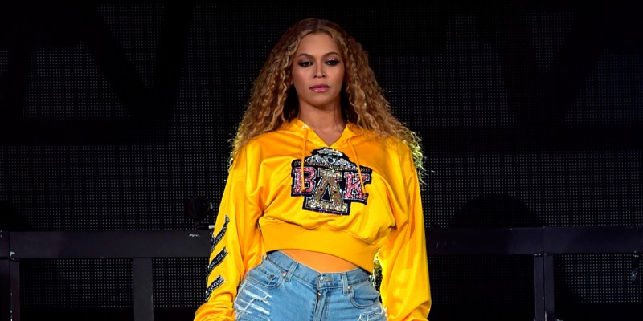

BEYONCÉ
Beyoncé é uma cantora, dançarina, compositora e produtora estadunidense. Nascida em Houston no Texas se tornou conhecida em 1997 por integrar a girlband feminina de grande sucesso Destiny´s Child. Em 2003, com a separação da Destiny´s Child, Beyoncé deu inicio a sua carreira solo com o lançamento de seu álbum “Dangerously in Love” que teve dois singles em primeiro lugar na Billboard Hot 100 e que no ano seguinte ganhou cinco Grammys. Ao longo de mais de 20 anos na carreira musical é formada por seis álbuns de estúdio, quatro álbuns ao vivo, um álbum de remixes e cinquenta e nove singles. Beyoncé é sem duvida considerada uma das melhores cantoras de sua geração, com uma voz inigualável e coreografias invejáveis desde que ficou conhecida nunca mais saiu das paradas de sucesso. Atualmente acumula exatos 28 Grammys Awards. Em 2011 foi eleita pela Forbes em primeiro lugar na listagem de mulheres afro-americanas mais poderosas nos Estados Unidos. Em vinte e quatro anos de carreira, a cantora é dona de hits atemporais sobre feminismo, luta contra padrões de beleza e luta da comunidade negra como “Run The World (Girls)”, “Pretty Hurts”, “Halo”, “Crazy in Love” e “Brown Skin Girls”.